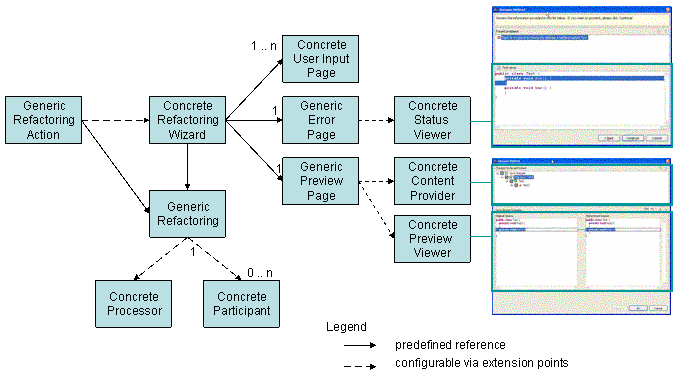

The document describes the refactoring processor/participant. Some of the features outlined in the original proposal didn't get implemented for 3.0. Those features are marked in blue.
To enable other plug-ins to participate in certain refactorings their implementations are split into a processor/participant architecture. An extensible refactoring has one processor and 0 .. n participants. The major characteristics of processors and participants are:
Participants can only participate in changes triggered by a processor. There is no support to participate in changes caused by another participant. The processor/participant architecture will not support arbitrary refactoring composition. Refactoring composition requires that a precondition check describes its result in some kind of postcondition which is then used as input for precondition checking of the next sibling refactoring in the composite. Consider the following example: a composite refactoring consists of the two refactorings (a) create class A.java and (b) add a method to A.java. One precondition check of refactoring (b) is: does A.java exist? Therefore evaluating the preconditions of both refactorings in isolation will fail. In contrast precondition checking in the processor/participant architecture assumes that the changes performed by the processor and the participants are "unrelated" to each other and therefore the preconditions can be checked in isolation.
Both processors and participants are contributed via extension points. XML expressions (comparable to those used for contributing to a pop-up menu) are used to describe their availability. For 3.0 only participants can be contributed via XML. Processors are still contributed via code. We had a prototype running where processors where contributed as well. The concerns were: performance, since on selection change we evaluated extension points, the fact that there can be more than one processor that handles an element (user arbitration), and problems to pick processors when multiple elements were selected.
For each refactoring that is split into a processor/participant there is a "generic" action. This action creates a generic refactoring responsible to find the right processor and participants depending on the element(s) selected. Having such a generic action ensures that the same refactoring is triggered independent from where the refactoring is activated. The UI for the refactoring is determined by the processor chosen to process the element. Since processors and participants create errors and change objects typically not known by the refactoring framework the error and preview page must be extensible as well. The concrete status error viewer is picked depending on the type of status returned from precondition checking. The type of the change objects determines the concrete preview viewer. Additionally special content providers are needed for different change types to ensure proper rendering the of tree presenting all changes. Since processor are specific and contributed via code the actions aren't generic either. They still refer to concrete processors. Additionally the actions determines the user interface to use. Pluggable status and preview viewers are implemented, however the tree showing the modified resources is still JDT specific (no pluggable content provider; the implementation of such a tree has very much in common with a generic Navigator).
The picture below presents an overview of the new processor/participant split. Classes labeled as "generic" are provided by the refactoring framework. Classes labeled as "concrete" are concrete implementations provided by clients. A dashed line expresses a references between classes configurable via extension points. Solid lines indicate a fixed reference not configurable by client plug-ins.

The details of the processor/participant architecture are illustrated by the examples below.
Renaming method A#foo() into A#bar() takes place according to the following steps:
The generic rename refactoring searches in Eclipse's registry for a processor that is able to "rename" a Java method. An example of a processor capable to rename a Java method is:
<renameProcessor
id="org.eclipse.jdt.renameProcessor.Method"
class="org.eclipse.jdt.internal.corext.refactoring.rename.RenameMethodProcessor">
<enablement>
<with variable="element"/>
<instanceof value="org.eclipse.jdt.core.IMethod"/>
</with>
</enablement>
</renameProcessor>
Due to its extensibility the new generic rename refactoring can only assume that it is renaming an element of type object. Hence a Java method rename processor must constrain its availability to IMethods. The <enablement> element can be used to describe a processor's availability depending on the state of the element to be renamed. This isn't implemented since processors aren't pluggable.
The rename action is disabled if no processor can be found.
Find all interested participants of a Java method rename. A typical rename Java method participant looks as follows:
<renameParticipant
class="org.example.jsp.refactoring.RenameMethodParticipant"
id="org.example.jsp.refactoring.renameMethodParticipant">
<enablement>
<with variable="affectedNatures">
<iterate operator="or">
<equals value="org.eclipse.jdt.core.jspnature"/>
</iterate>
</with>
<with varaible="element">
<instanceof value="org.eclipse.jdt.core.IMethod"/>
<property name="org.eclipse.jsp.core.internal.isPrivate" value="false"/>
</with>
</enablement>
</renameParticipant>
Since participants are typically defined in higher level pug-ins care must be taken to avoid unnecessary plug-in loading. This is achieved by a two step approach:
Compute the activation status of the rename refactoring by considering activation status of the processor and all participants. If the returned status doesn't contain any fatal error, determine the UI depending on the state of the processor. Processors are UI independent hence they can't have any references to the UI. So the processor UI relationship must be defined somewhere else. In the current implementation this is done by the action. If we want to have "generic" actions then the user interface must be contributed via an extension point as well.
The concept of derived elements is discussed using the rename Java field refactoring. Fields are commonly used as properties with corresponding setter and getter methods. A special rename field refactoring is aware of this relationship and renames the setter and getter method when the field gets renamed. Participants are contributed based on the element to be changed. Since the main element is a field no rename method participants are loaded. Therefore a processor can provide a set of additional elements that it manipulates. These elements are called derived elements. In contrast to participants that work on the main element (in our example the Java field), derived participants may depend on user input. E.g. in JDT renaming the corresponding setter and getter of a field can be controlled by the user. So derived participants can only be loaded after the user has pressed the finish or preview button. Since they missed the initial condition checking phase of the precondition checking the result of the initial condition check of derived participants is merged into the result of the processor's final condition checking.
The concept of resource modifications is discussed using the rename Java package refactoring. Although packages are mapped to folders on the file system, renaming a package is a different operation than renaming its underlying folder. Renaming a package maps to the following resource operations:
Now consider the following example: package p1 contains Java and HTML files. Additionally, there is a HTML plug-in that wants to participate in moving HTML files to update href elements in other HTML files. Since a HTML plug-in doesn't know anything about Java it can't participate in renaming a package. Even if it had a reference to the Java plug-in, participating in a package rename to determine this situation would require that the HTML plug-in doubles the logic for mapping a package rename to the underlying file system. To solve this problem a refactoring processor must express higher level operations in terms of resource modifications when possible. These resource modifications are then taken to determine the appropriate set of participants. This means for the HTML plug-in that it is enough to register a file move participant. Like participants for derived elements participants for resource modifications are computed after user input. Hence their initial condition checking is merged into the processor's final condition checking as well.
Source folders (package fragment roots) are a special kind of folders. Besides their underlying folder on disk additional information about the build path and the output folder is associated with a source folder. Will there be a special rename source folder processor or a folder rename participant? The Java model offers a method to rename a source folder which updates the necessary build path information. Therefore implementing source folder rename with a participant duplicates that code in a participant. Furthermore the provided delta looks different. A participant implementation triggers the following deltas:
A special source folder processor triggers the following deltas:
Clearly the second delta is more appropriate. It is exactly what clients listening to deltas expect. Therefore the source folder rename is implemented using a special processor. In the current implementation this is hard wired since processors can't be contributed. If we support contributing processors the two processors have to be defined as follows:
#### The processor to rename resource (files, folders, projects, ....)
<renameProcessor
id="org.eclipse.jdt.renameProcessor.IResource"
class="org.eclipse.jdt.internal.corext.refactoring.rename.RenameResourceProcessor">
<enablement>
<instanceof value="org.eclipse.core.resources.IResource"/>
</enablement>
</renameProcessor>
#### The processor to rename source folders
<renameProcessor
id="org.eclipse.jdt.renameProcessor.IPackageFragmentRoot"
>> override="org.eclipse.jdt.renameProcessor.IResource"
class="org.eclipse.jdt.internal.corext.refactoring.rename.RenameSourceFolderProcessor">
<enablement>
<or>
<instanceof value="org.eclipse.jdt.core.IPackageFragmentRoot"/>
<and>
<instanceof value="org.eclipse.core.resources.IFolder"/>
<property name="org.eclipse.jdt.core.isSourceFolder" value="true"/>
</and>
</or>
</enablement>
</renameProcessor>With the override attribute (marked with ">>"" in the above example) the rename package fragment root processor specifies that it replaces the rename resource processor if its object state matches. This is the case if the element to be renamed is of instance IPackageFragmenRoot (which is the case if a source folder is selected in the package explorer) or if the element is of instance IFolder and it can be converted into a source folder (which is the case if a source folder is selected in the resource navigator).
What happens if the processor isn't unique for an element? In this case the user has to decide which processor he wants to use to perform the refactoring. Analogous to the Open With menu item the user is able to define a preferred processor to avoid unnecessary user arbitration.
When refactoring more than one element, for example moving two HTML files from one folder to another, there could be one participant instance handling both file or two participant instances each handling one file. Since it can't be defined up-front what the best solution is, a participant can be tagged as sharable. If it is tagged so, it will be reused for all elements which match the same extension as the sharable participant.
Preconditions like validateEdit must be check together for the processor and all participants (otherwise the user would see multiple dialogs). Participants can therefore contribute to shared precondition checkers instead of implementing the check by themselves.